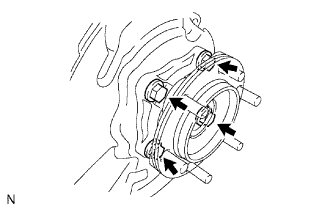

FRONT AXLE HUB > REMOVAL |
| 1. REMOVE FRONT WHEEL |
| 2. REMOVE DISC BRAKE CYLINDER ASSEMBLY LH |
 |
Using a union nut wrench, disconnect the brake tube from the disc brake cylinder assembly.
 |
Remove the 2 bolts and disc brake cylinder assembly.
| 3. REMOVE FRONT DISC |
 |
Place matchmarks on the disc and axle hub if planning to reuse the disc.
| *1 | Matchmark |
Remove the front disc.
| 4. REMOVE FRONT AXLE HUB GREASE CAP |
Using a screwdriver and hammer, remove the front axle hub grease cap.
| 5. REMOVE FRONT AXLE SHAFT NUT |
 |
Remove the cotter pin and lock cap.
Remove the front axle shaft nut.
| 6. REMOVE FRONT AXLE HUB SUB-ASSEMBLY LH |
|  |
Remove the 4 bolts.
Using a plastic-faced hammer, tap out the front drive shaft from the front axle hub.
Remove the front axle hub and front disc brake dust cover.
Remove the O-ring.